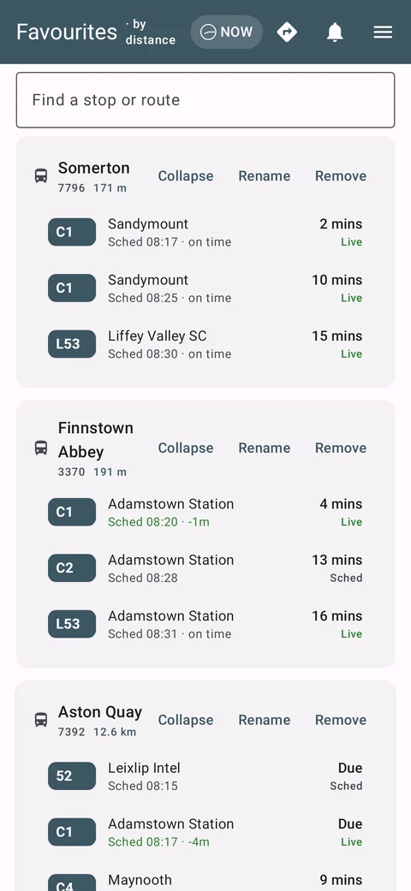
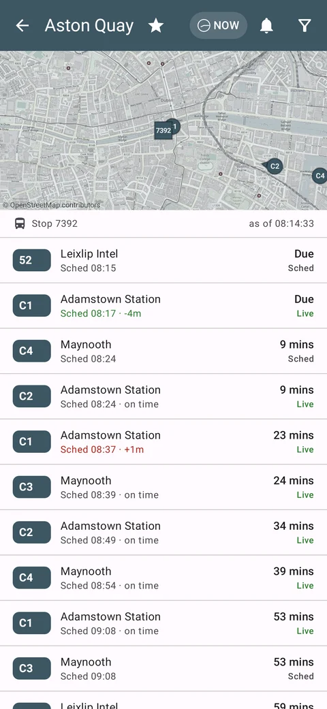
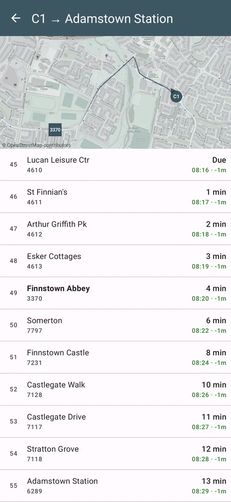
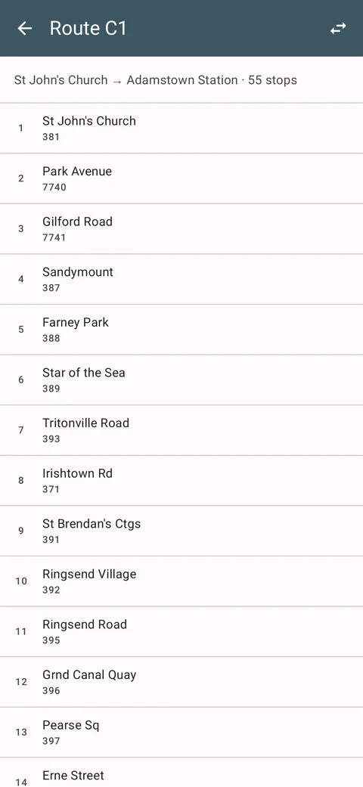
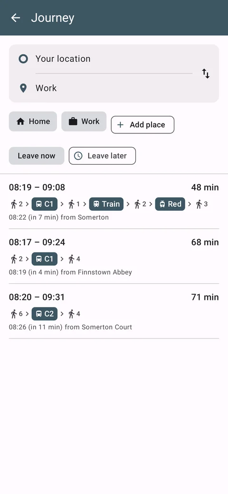
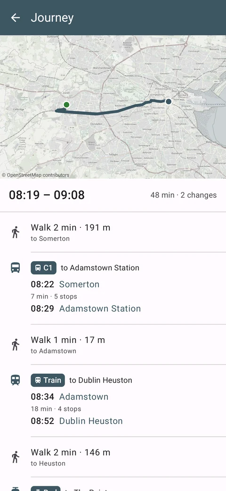
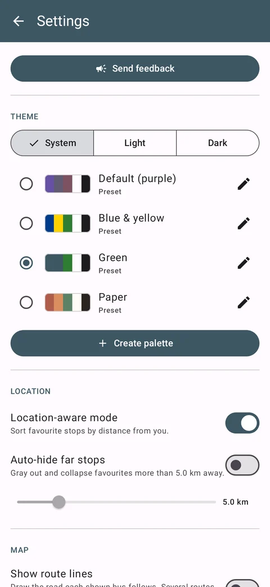
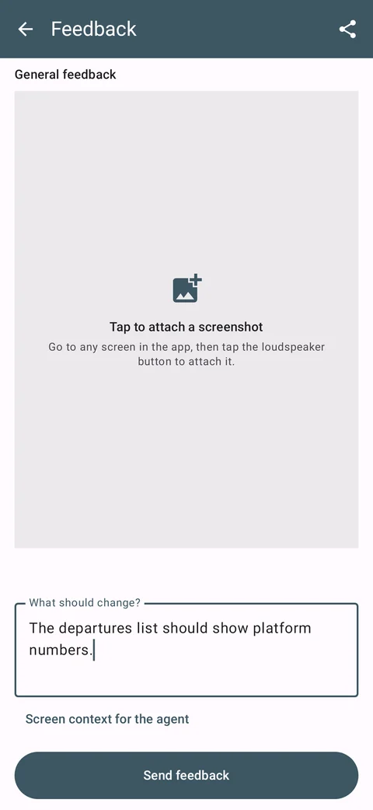

Live Dublin bus, Luas and rail departures for Android, built to replace the TFI Live app.

Favourites, nearest first

Live departures and buses on the map

Every stop on a trip, with live times

A route in both directions

Journey planning (1.16 preview)

A journey on the map (1.16 preview)

Themes and settings

Feedback from inside the app
| Version | Date | Changes | Download |
|---|---|---|---|
| 1.16 · preview | 13 Oct 2026 | Preview from the route-planning branch: plan a journey by foot, bus, Luas and train, and save places such as home and work. Journey planning is not yet switched on on the server. | ReleaseDebugrelease 25 MB · debug 33 MB |
| 1.15 | 13 Oct 2026 | Choose light or dark regardless of the phone's setting. Maps stay sharp when you zoom in. | ReleaseDebugrelease 25 MB · debug 33 MB |
| 1.13 | 9 Oct 2026 | Send feedback from Settings, with a screenshot of any screen attached. | Releaserelease 25 MB |
Installing from Google Play is recommended. Play, release and debug builds are each signed differently, so one can't be installed over another: uninstall first to switch.
a0bf659bdc889ce5d8fc8c215a3be7dccd0720d1970ab5d16a2e020560370777 release/1.16.apk03d89e3869573a4dd000f9da16372872deb9e2da6dcccb100c65b1fbdf78b96b debug/1.16.apk19e962af74e465e73c296bceb09f733765b01940c0f264a60822628040a7a4f0 release/1.15.apkc01ee671f62527beec9ba53004232c31986e55db85a3e28a6f48696ab6b36f7b debug/1.15.apkc9aa4c289123309904b5334e5578757f5658b02dfbdd535dac41489d10465221 release/1.13.apk